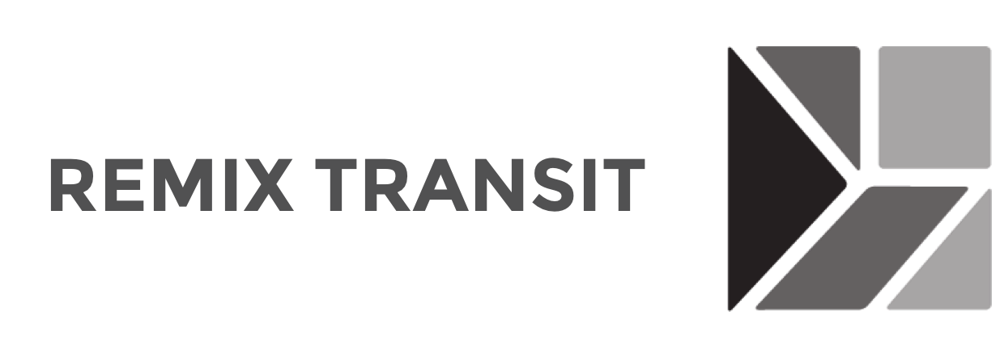

Design Thinking for the Developer Workshop
Design Thinking for the Developer Workshop
Originally written: July 19, 2017
Written, and presented to other interns during my IBM Summer 2017 Internship

PRESENTATION DESCRIPTION
Design thinking isn’t exclusively for pushing pixels and making pretty graphics. It is really a methodology: a process in problem solving.
This is why design thinking is also for developers.

CONTEXT
Just in casual conversation with other fellow interns, I realized that not many software developer interns understand what design really is, and its importance. As the only design intern out of the ~30 interns, I decided to take the matters into my hand to share the design story. It was also a good opportunity for me to step outside of my comfort zone to be in the spotlight. The intent for this presentation is to communicate what design thinking is and how it is beneficial to developers with the help of case studies. It gives developers new to design a fresh perspective on design thinking.
WHAT IS DESIGN?
Many have heard these buzzwords being thrown around: user interface design, user experience design, design thinking, visual design, graphic design, product design, industrial design. These are all different domains within design, but I would like to focus on two of these that are most relevant to software development: product design and design thinking. These two are also the "umbrella domains" that are most central to design. Together, they create product design thinking.
To understand what this means, let's first explain what design thinking is:
Design Thinking is the decoupling of Design from any specific toolset (Industrial Design, Architecture, Graphic Design) and recognizing that the process can be applied to any problem space.
(Cooper-Wright, 2016)
Product design thinking is simply design thinking as a process being applied to the development and design of a product. And yes, a software product is still a product, despite the traditional connotation that a product is something physical and falls in the domain of industrial design.
The design thinking process in application to a product generally starts with process to define the product intent and scope:
(Blaase, 2015)
As design thinking places heavy emphasis around human-centered design solutions, defining the problem and targeted user is key. This ensures that the produced product or feature is actually meaningful and useful to the target audience. This Problem-Solution-Fit is critical for the success of a product, and must precede any interaction, visual, experience design, etc. A goal is set-up to help ensure that the future product will solve and achieve the original design problem and goals.
This process should help with the final product definition:
(Blaase, 2015)
DESIGN PROCESS VS. AGILE
In fact, Agile, a standard that many tech industries use today, is based off of the design thinking process. Unlike Waterfall, the Agile process is centered around continuous iterations and feedback. The biggest problem with Waterfall is that a company may spend months developing one product, only to realize that it is not what the audience wants or needs during release. Agile's short iteration segments (or sprints), ensures that misdirections are caught early on, and enables the team to continuously steer towards users' needs.
DESIGN AS A HOLLISTIC PROCESS
Design solves problems from a hollistic point of view
Finally, product design thinking is really the consideration of the psychological, technical, and business aspect. It must consider the users to be able to identify a problem to be solved. It must also be technically feasible and be able to be financially sustainable, or help achieve the company's financial goals. It is the consideration of all three of these aspects where innovation can happen.
CASE STUDY 1: MICROSOFT
Identified problem (2010):
“Microsoft is unable to connect with the new generation of users”
– Global Equities Analyst Trip Chowdhry, 2010
When Steve Balmer stepped down as CEO in 2014, Microsoft was facing a crisis. Windows 8 was a disaster, Windows Phone remains insignificant to the iPhone and Android market, and Bing search engine is unable to even put a dent onto Google.
This is because the target audience has changed. The new generation of users is no longer locked to their desktops or laptops. Phones and tablets are more adapted to our society's user story, and as such, everything is now on the cloud. Thus, the strategy done is to make sure that Microsoft software and services is available to wherever customers are. This results in Microsoft's venture into the cloud market with Azure, and increased priority for Office and other MS services for iOS and Android.
As a result, Windows OS is only 10% of Microsoft's revenue in early 2016, even though it was the undisputed cash cow. Why the change? Despite Vista and WIndows 8's failures, Windows OS still remains the most popular OS against Mac and Linux. Again, desktop has became less important. It will never really become obsolete anytime soon, but phones, tablets, and other more mobile technologies have onset our new use case scenario.
Now, Azure is the largest market they have participated in: even larger than windows, with Azure's sales going up by 140% in one year. Microsoft's stock price hit its first new all-time high since 1999 in late 2016, from ~30 USD per share in 2013 to ~70 USD now (Summer 2017).

CASE STUDY 2: REMIX TRANSIT
Problem:
“Transit planners are unable to update their decades old systems as the current solution is too archaic"
Below is what transit planners have to work with: an excel sheet with routes, dates, and times spanning for a hundred-or-so tabs underneath. A map of the transit lines are on a seperate hardcopy, and planners have to manually reference the paper map. Changes are tracked by colour-coding the fields.
The design solution is thus targeted for transit planners of medium to large cities, to give them a toolset to finally update their transit systems and routes. This is important because a good transit system is the key to building liveable cities. It determines where one can or can't go, who has access to which jobs, and how the economy of the city grows as a whole.
The result is Remix Transit, a toolset that shows the schedule, frequency, census calculations, costs and its tradeoff in just seconds. It is an extremely powerful toolset, in not just planning transit lines, but also during presentations. Furthermore, it supports importing from the original format, which is a "dream come true" for the transit planners.

Remix displaying all the routes against a visual map.

Dragging a line across the city map updates the times, distances, cost, and population of area live.

Can show the population density of the surrouding areas to allow transit planners to design for the people.

Also shows the poverty rates of surroundings areas, to aid in decisions involving municipal economic development.

Finally, has a feature that shows where one can go with public transit within a certain time on a certain day. Again, this enables transit planners to see from the patrons' perspectives and really plan the system for the people.

This product has identified a problem with a specific target audience, and provided wonderful a solution. Its success can be seen by its usage: across the globe, amongst 3600 cities
CASE STUDY 3: NOKIA
Problem:
To achieve their business goals in developing, marketing, and sellling phones to emerging markets in developing countries, such as rural India.
With their target users being end users and retailers in rural India, Nokia invested heavily in understanding local needs to better build distribution and retail networks.
This resulted in their most popular model, the NOKIA 1200. It is designed to be higher quality and more durable than competitive models: being dust repellent and having grips for high-humidity environments (ie. India). The most significant competitive advantage with Nokia's phones however, is its multi-functionality and shared-phone capability. It has a built in radio receiver and an LED flashlight, but also an user interface that enables it to be used as a shared-phone. The UI supports 80 different languages, multiple contact lists, and a prepaid usage tracker which tracks the amount of airtime and price of each call. Since most consumers would not be able to afford it if it were a personal cellphone, this design decision was pivotal in their product’s success.
This model became popular with local micro-entrepreneurs in rural india to invest as rental phones. Nokia made sure to educate the micro-entrepreneurs their products' various technical capabilities, and how it will allow them to further maximize profits. In 2009, 35% of Nokia's total sales were from these markets.
The business to micro-business relationship outlined above results in mutual finacnial gain, and allows citizens access to mobile networks when infrastructure is lacking other means of communitcation. It has helped promote economic growth by enabling micro-business opportunities, and raised living standards in developing countries, thus help alleviating poverty. In fact, SECC data shows that a surprising 71% of the rural India population has access to a mobile phone as of 2015.
Now that we've examined the importance of design and its scale of impact, from a company, city, to a whole country, how does this apply to you? Since obviously, we can't all be influential CEOs. Believe it or not, the design thinking process is actually very beneficial to an intern or junior software developer as well. A good example when writing APIs, and considering it as a customer facing product. In this case, the customer is other developers, inside and outside of the company.
CASE STUDY 4: IBM DASHBOARD MONITORING
IBM has foundry applications that require constant monitoring. If it is not live 99.5% of the time, they give customers of their cloud services refunds of a certain percentage. A UI exists to monitor the applications, displaying green for live, red for down, and grey for no data. No data being collected can only mean that there was a disconnect between the data collector and the data sources and that is an issue. Once, the UI displayed gray for a full 48h over a weekend. This is a problem that calls for a solution.
A third party dashboard monitoring tool is added to the system. It pulls JSON data from the data sources. If the test results returns false for any of the locations and/or data sources, a pager duty is automatically notified.
However, problems arose in writing this dashboard monitoring tool. Node has existing APIs to call 2 seperate JSON files for each location: one with test results, and one with location and data source. These two pieces of information are only useful when referenced together, but for some reason it is written seperately. The developer had to hard code the two JSON files based on its naming convention for the API URL. It is only a temporary solution, since it adds an extra, unecessary layer on the toolset and requires updating should the test names ever change.
If the original developer that wrote the test files considered the use cases for the end-user of his or her APIs, this situation could have been avoided
In the case of a junior developer or an intern writing a set of APIs, one should consider it as a customer facing product. For example, one can think of edge cases by first identifying the user: a functional programmer, or an object-oriented programmer? Then think of what they would want: capture the cases they would use, wouldn't use and wouldn't require support, and what would be difficult with your APIs.
For example, funtional programmers might want APIs that contain pure functions that lack mutable state; while object-oriented programmers may not. Instead, they might prefer stateful classes and methods that change the state of those objects.
So if you're thinking, 'jokes on you, I already do this. This is basically system requirement analysis,' that's good! As mentioned, the design process is a problem solving process with many overlaps with the software development process. Whether you're a billion dollar company or just one person, the principle is still there. The code you write can be a product to be consumed by people outside of the company, your co-workers, or even you 6 months later.
FOOD FOR THOUGHT: NORMAN DOORS
So how do you know what is good design? I like to use the classic example of the Norman Doors. It is often hard to tell which way to open a door, which results in people having to try both ways, causing a lineup. Worse, this may pose to be a safety concern when applied to emergency exits. Sometimes extra signage is added to the door, but that destroys the aesthetics of the original design and is one extra step.
The answer is that the pull door should have a handle and the push door should have a flat push bar. These two small details signifies the required actions, respectively, and can really decrease these little, daily frustrations. So the next time you have trouble opening a door, walk into glass panels, or have trouble operating an elevator, it might not be you.